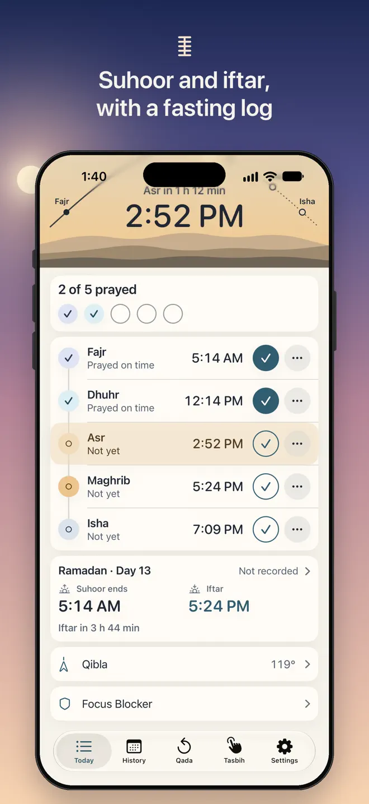
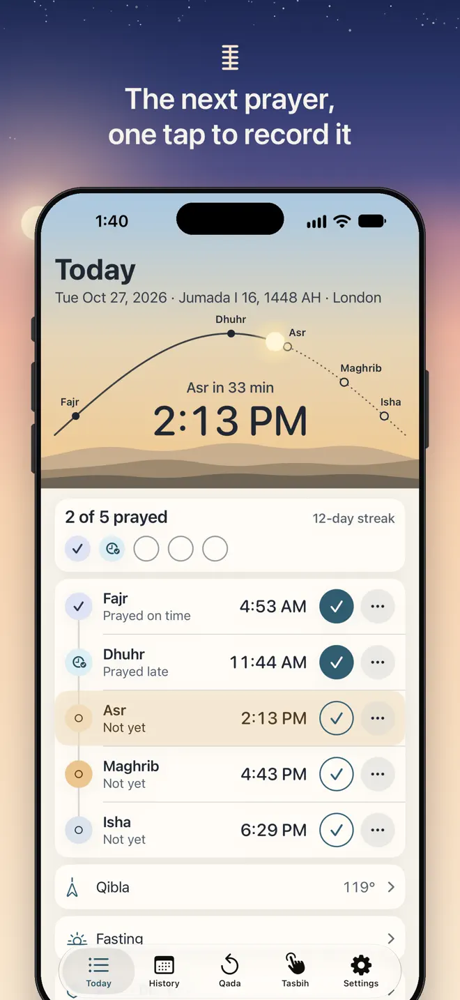
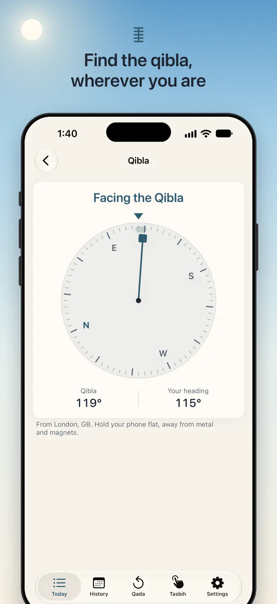
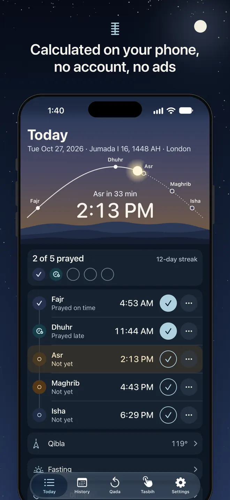

The next prayer, the time until it, one tap to record it.
Prayer times are calculated on your phone, so they work at home, at the office and on a plane. Your five daily prayers, the ones you still owe, your fasts and your tasbih are kept in one place that never asks you to sign in and never shows an ad.
iPhone and Android · Works offline · No account, no ads



What it does
Today, at a glance
Prayer times that work offline
Fajr, Dhuhr, Asr, Maghrib and Isha calculated on the device from your location or a city you pick. No internet needed.
The method you follow
MWL, ISNA, Umm al-Qura, Egyptian, Karachi, Dubai, Qatar, Kuwait, Singapore, Turkey, Tehran, Moonsighting Committee or Jafari; Shafi or Hanafi Asr; a minute adjustment for each prayer.
One tap to record
Record a prayer as prayed on time, late or missed, and undo any change. Nothing is marked for you.
Qibla
The direction to the Kaaba calculated on your phone, with a dial that turns with you and a gentle tap when you are facing it.
Qada, counted your way
Enter the prayers you still owe for each of the five and count one down each time you make one up.
Ramadan and fasting
Suhoor and iftar times with a countdown to each. Record each day as fasted or not, and keep the fasts to make up.
How it works
A record that stays between you and your phone
See the next prayer
A countdown at the top, today's Hijri date beside the day, and a reminder for each prayer if you want one.
Record what happened
On time, late or missed. Turn on Witr, Duha or Tahajjud and record them under the five.
Look back
A calendar of every day, a streak of complete days, and stats for the week, the month or any dates you choose.

Your data
Never asks you to sign in, never sends what you record
- Calculated on your phone. Prayer times and Qibla need no server.
- No account and no ads.
- Your record stays on your device. What you record is not sent anywhere.
- Hijri date by Umm al-Qura or the tabular calendar, adjustable by up to two days either way.
Questions
Before you download
Does Prayline work offline?
Yes. Prayer times and the Qibla direction are calculated on the device, so they work without internet — at home, at the office and on a plane.
Which calculation methods are supported?
MWL, ISNA, Umm al-Qura, Egyptian, Karachi, Dubai, Qatar, Kuwait, Singapore, Turkey, Tehran, Moonsighting Committee and Jafari, with Shafi or Hanafi Asr, three high-latitude rules and a minute adjustment for each prayer.
Can I keep track of missed prayers (Qada)?
Yes. Enter the prayers you still owe for each of the five and count one down each time you make one up. A missed prayer can be added to Qada with a tap.
Are there ads or an account?
No. Prayline never asks you to sign in and never shows an ad.
Does it include a Qibla compass and tasbih?
Yes. Both are in the app, along with a fasting log for Ramadan and voluntary fasts.
Which devices and languages does Prayline support?
iPhone (iOS 17 or later) and Android. The app is available in 7 languages: English, Arabic, French, Indonesian, Malay, Turkish, Urdu.
- Made for
- Muslims who want prayer times, Qibla direction and a private record of their prayers and fasts
- Platforms
- iPhone (iOS 17 or later) · Android
- Languages
- English, Arabic, French, Indonesian, Malay, Turkish, Urdu
- Category
- Lifestyle
- Developer
- Ho Van Dai
- Page updated